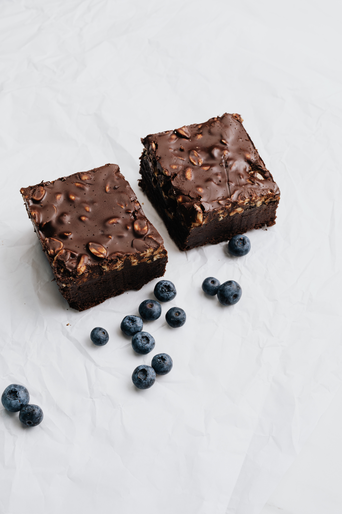
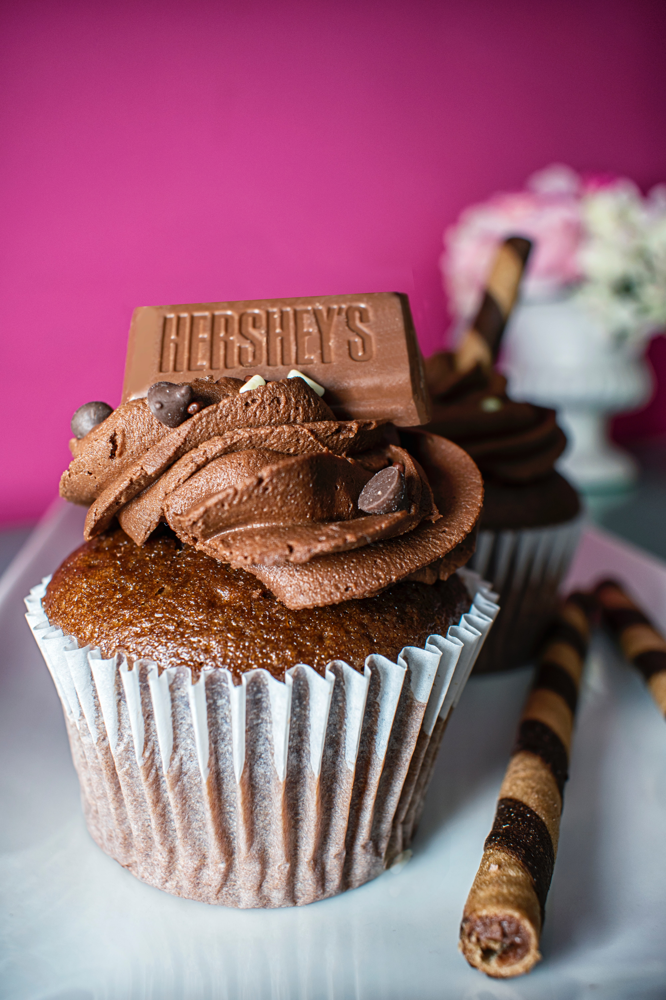

Brownie

Ingredientes
- - 100gr de manteca
- - 150gr de chocolate
- - 2 huevos
- - 1/2 tazas de nueces picadas
- - 100gr de harina
Preparacion
- 1. Vamos a colocar la manteca y el chocolate picados en una sartén, y llevarlos a fuego bien bajo. Lo tapamos y vamos a dejarlo por unos 5 minutos sin tocar. Confíen!
- 2. Retirar del fuego y revolver los ingredientes hasta que esté todo derretido e integrado.
- 3. Vamos a batir los 2 huevos con el azúcar hasta que queden bien blancos, esto es clave para que el brownie casero quede bien húmedo.
- 4. Agregar el chocolate derretido y batir hasta que esté integrado. Sumar las nueces en pedazos grandes o como más les guste.
- 5. Sumar el harina 0000 tamizada en dos partes e integrar todo. Es importante batir fuerte antes de pasar el brownie de chocolate al molde.
- 6. Colocar en una placa y cocinar al horno fuerte (200-220°) por 20 minutos.
Muffins de chocolate
Preparacion
- 1. Vamos a batir los 3 huevos con el azúcar (le puse azúcar negra para que queden bien oscuros, pero puede ser blanca) hasta que queden espumosos!
- 2. Ahora vamos a agregar 1 taza de harina y unir sin mover demasiado. Cuanto esté integrado agregar la taza de aceite e incorporar.
- 3. En el siguiente paso, vamos a incorporar el cacao, junto con las semillas si las ponen, las almendras y la leche. Unir todo bien.
- 4. Por último, para ir terminando los cupcakes de chocolate, vamos a incorporar la última taza de harina y unir todo.
- 5. Vamos a colocar en moldes para cupcakes, llenos hasta sus 3/4 partes. Los llevamos al horno a fuego medio-bajo por unos 45 minutos o hasta que pinchándolo con un cuchillo o palillo salga seco.
Igredientes
- - 3 huevos
- - 2 tazas de harina leudante
- - 1/2 tazas de cacao
- - 1/2 tazas de leche
- - 1 taza de azucar negra (puede ser blanca)
- - 1 cucharada de almendras picadas
- - 1 taza de aceite

Torta oreo

Ingredientes
- - 800gr de queso crema
- - 400gr de crema de leche
- - 30 galletitas oreo
- - 80gr de manteca
- - 100ml de leche
- - 120gr de azucar
- - 1/2 de jugo de limon
- - 16gr de gelatina
- - Sal
Preparacion
- 1. Separar la crema de todas las galletas. Reservando por un lado las tapas y por el otro la crema.
- 2. Triturar las galletas, con una licuadora o amasándolas dentro de una bolsita.
- 3. Unir las galletas trituradas con manteca pomada cortada en cubitos. Mezclar con las manos hasta unir los ingredientes. Se agrega más manteca si es necesario.
- 4. En un molde desmontable colocar papel de horno en la base y por arriba de este agregar las galletas con manteca, presionando por arriba para formar una base uniforme. Reservar en frío.
- 4. En una olla colocar la crema del relleno de las galletas junto con queso crema, jugo de limón, 80 gr. de azúcar y cocinar a fuego medio removiendo constantemente.
- 5. Pasados unos minutos se habrá formado una mezcla homogénea, en ese momento agregar la leche y continuar mezclando, desarmando los grumos si es que quedan.
- 6. Agregar la gelatina disuelta y mezclar incorporándola. Buscando que la textura sea ligeramente espesa.
- 7. En otro recipiente agregar la crema de leche junto con 40 gr azúcar. Batir enérgicamente, a mano o con batidora. Buscando que no llegue al punto por completo. Logrado esto, incorporar la crema con la mezcla anterior, cuidadosamente y con movimientos envolventes.
- 8. Arriba de la base volcar esta mezcla y con la ayuda de una cuchara moldear la superficie para emparejar y alisar. Llevar a la heladera por al menos 6 horas.